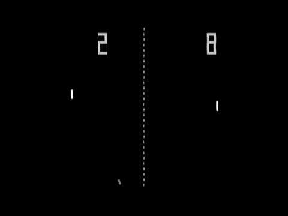
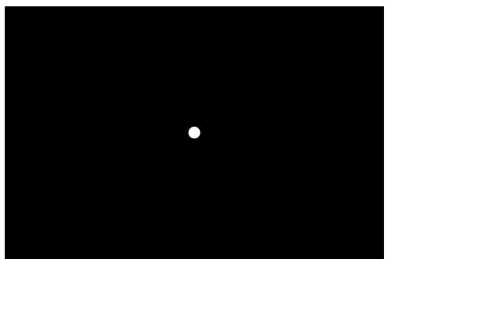
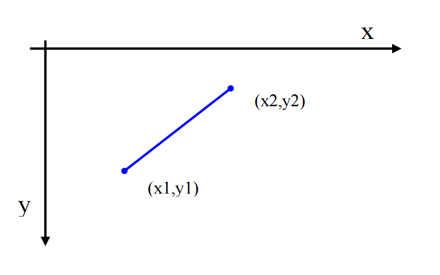

Adaptado do tutorial "A Anatomia de um Motor de jogo" de A.Coelho et al. Disponivel em https://web.fe.up.pt/~acoelho/wsjogos/ .
ÍndiceNeste tutorial vais aprender os princípios básicos do desenvolvimento de jogos digitais e compreender o funcionamento de um motor de jogo. Iremos desenvolver um jogo clássico, que foi um marco na história dos jogos digitais, com o qual iremos desvendar os princípios de funcionamento de um motor de jogo.
Este projeto como os anteriores será desenvolvido em javascript. Adicionalmente será usada a biblioteca p5.js para facilitar o desenvolvimento de uma aplicação gráfica.
A indústria dos jogos de computador é uma das mais lucrativas e com maior crescimento da atualidade. Tendo sido considerados como parentes pobres das outras aplicações informáticas “mais sérias”, os jogos de computador possuem, na atualidade, orçamentos equiparados aos filmes de Hollywood.
Um dos jogos mais marcantes da história dos jogos de computador foi o Pong, criado pela Atari Inc. em 1972. Não porque tivesse sido o primeiro jogo digital, mas porque foi o primeiro a ter êxito comercial, quer em máquinas arcade, quer em consolas domésticas, lançando as bases para a atual indústria dos jogos digitas. Os jogos digitais são, na sua generalidade, desenvolvidos para o entretenimento. No entanto, cada vez mais esta tecnologia ganha terreno em outras áreas como a educação ou a formação profissional (game-based learning/training) e as aplicações para a saúde, para as empresas, para a publicidade, entre muitas outras áreas com outros propósitos que não apenas o entretenimento (serious games).
O primeiro passo na criação de um jogo é a seleção ou o desenvolvimento do motor de jogo. Um motor de jogo é, na sua base, muito simplesmente um ciclo que atualiza todos os objetos e, sendo a maior parte dos jogos aplicações gráficas interativas, lê os dispositivos de entrada e sintetiza imagem e som nos dispositivos de saída.
Assim, o motor do jogo realiza as seguintes tarefas de forma cíclica:
Vamos usar p5.js para suportar o nosso motor de jogo. A biblioteca disponibiliza uma função draw que é chamada repetidamente. Vamos usar esta função para o nosso ciclo de jogo.
function draw() {
// Logica de jogo
// Dispositivos de saída
background(0,0,0);
// Ball
ellipse(ball.x, ball.y, 16, 16);
}
A biblioteca p5.js trata dos dispositivos de entrada que vamos utilizar (teclado) sendo apenas necessário tratar da logica do jogo e dos dispositivos de saída.
Na logica do jogo é preciso atualizar o estado e os objetos de jogo. Neste exemplo ainda não colocamos nenhum código, que irá aparecendo ao longo das próximas secções...
O passo a seguir desenha o interface gráfico. Primeiro limpa o ecrã com a instrução background(0,0,0) (sendo 0,0,0 as componentes rgb da cor com que limpar, neste caso, o preto). De seguida desenha a bola no ecrã, na sua posição, com o tamanho 16 por 16 pixeis.
Mas antes de se poder usar o ciclo de jogo, é necessário algum código para inicializar o ambiente gráfico e do próprio jogo. Vamos declarar a função setup, chamada pelo p5.js no inicio do jogo.
// Variables
var ball = {}
function setup() {
createCanvas(480,320);
ball.x = width / 2;
ball.y = height / 2;
}
Começa-se com uma zona de declarações onde vamos colocar as nossas variáveis. Para já só precisamos de um objeto vazio que represente a bola.
De seguida implementamos a função setup. Aqui criamos a janela gráfica, com a função createCanvas, passando os argumentos largura e altura. Inicializamos também a posição da bola, no centro do ecrã.
Com este programa básico apenas poderá visualizar um círculo branco em fundo escuro... Nada que se pareça com um jogo digital...
Uma das saídas mais importantes para a maioria dos jogos de computador é a imagem (daí que sejam também conhecidos por videojogos). As imagens são apresentadas em ecrãs de computador segundo um sistema de referência cartesiano, onde cada objeto geométrico é representado pelos seus vértices, cada um dos quais se associa a um par de coordenadas (x,y), tal como apresentado na seguinte imagem.
